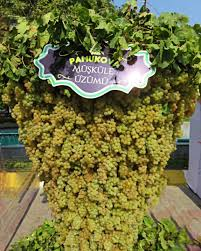
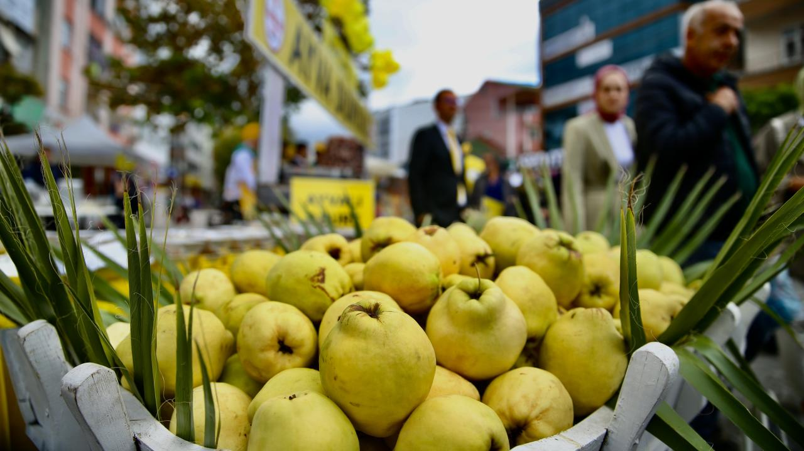
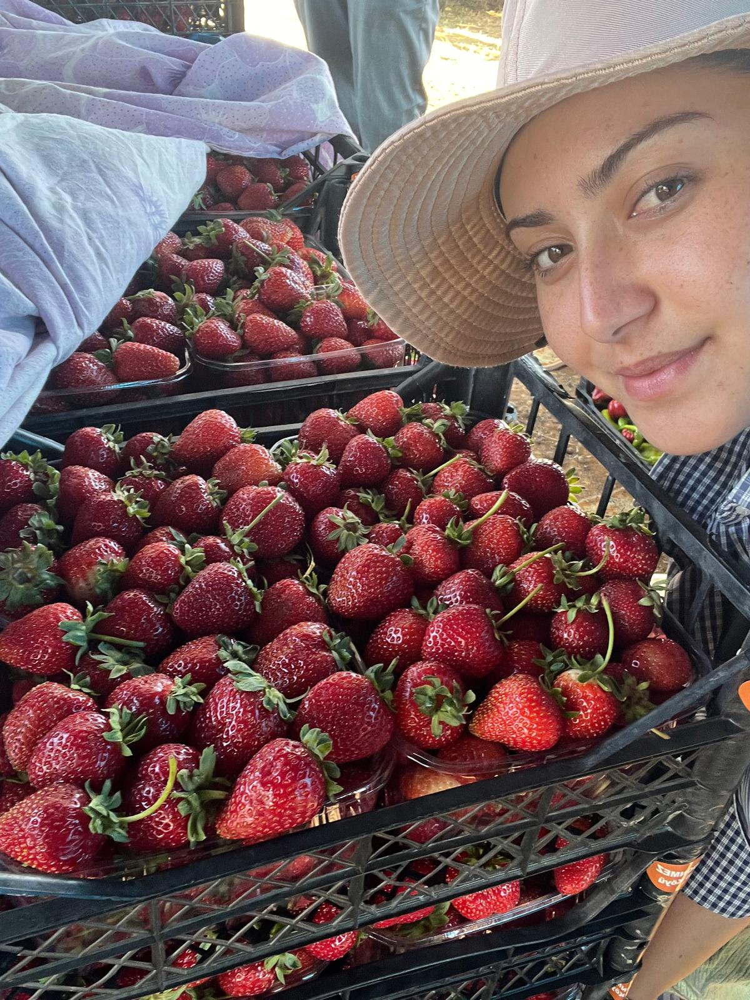
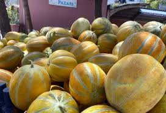
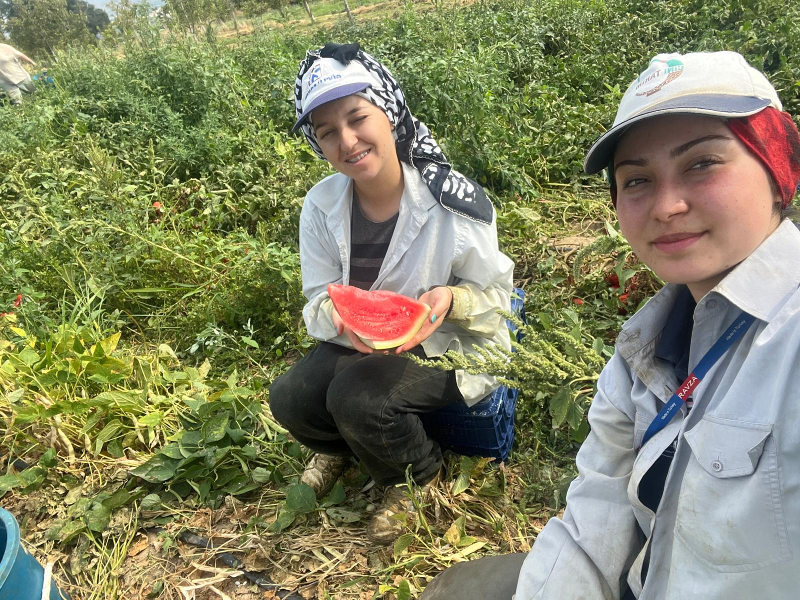
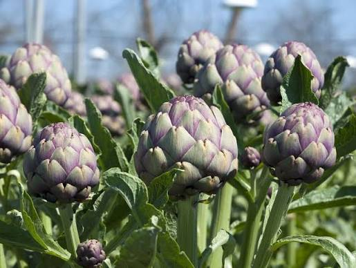
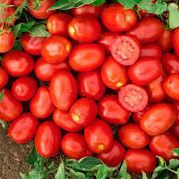
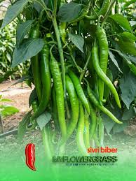
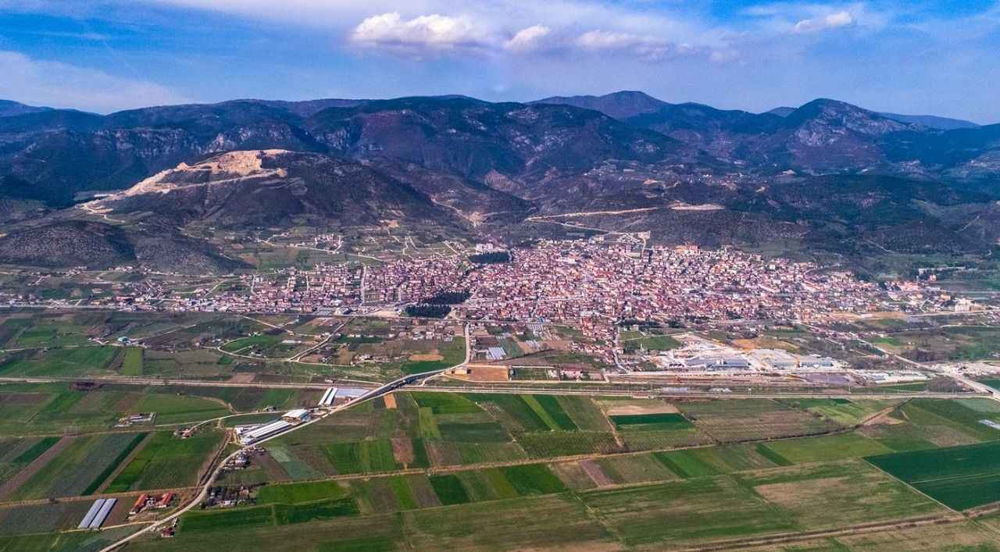

PAMUKOVA'NIN MEYVE VE SEBZELERİ
Sakarya'nın incisi olan Pamukova, adını ve ününü tüm Türkiye'ye duyurmuş çok özel bir bölgedir.
Sakarya Nehri'nin beslediği bu ovada toprak son derece verimli ve bereketlidir.
İkliminin ve toprağının elverişli yapısı sayesinde, burada yetişen meyve ve sebzeler benzersiz bir lezzete ve aromaya sahip olur.
|

|
Meşhur Pamukova Üzümü
→ Üzüm Bağları ve Yetiştiği Köyler İçin Tıklayın
Pamukova ovasında yetişen Müşküle üzümü, bölgenin en değerli ürünlerindendir.
İnce kabuğu, az çekirdekli yapısı ve eşsiz tatlılığı ile bilinir.
Hem sofralık olarak tüketilir hem de geleneksel yöntemlerle enfes pekmezler yapılır.
|
Coğrafi İşaretli Pamukova Ayvası
→ Ayva Bahçeleri ve Yetiştiği Köyler İçin Tıklayın
Pamukova'nın en meşhur simgelerinden biri olan ayva, koruma altına alınmış coğrafi işaretli bir lezzettir.
Kendine has göz alıcı sarı rengi, sulu dokusu ogrenci ve boğazı boğmayan mayhoş tadıyla bilinir.
Hem taze olarak tüketilir hem de harika reçelleri ve tatlıları yapılır.
|

|
|

|
Doğal Pamukova Çileği
→ Çilek Tarlaları ve Yetiştiği Köyler İçin Tıklayın
Pamukova'nın verimli topraklarında özenle yetiştirilen çilekler, rengi ve kokusuyla bahar aylarının vazgezilmez lezzetidir.
Tamamen doğal ortamlarda büyütülen bu çilekler, yüksek şeker oranı ve yoğun aromasıyla diğer çileklerden ayrılır.
|
Meşhur Pamukova Kavunu
→ Kavun Tarlaları ve Yetiştiği Köyler İçin Tıklayın
Pamukova'nın yaz aylarındaki en tatlı ikramlarından biri de şüphesiz kavunudur.
Yüksek güneş alma oranı ve verimli toprak yapısı sayesinde oldukça sulu, tatlı ve yoğun aromalı bir yapıya kavuşur.
Kokusuyla tazeliğini belli eden bu kavunlar, yaz sofralarının vazgeçilmezidir.
|

|
|

|
Geniş Ovaların Süsü: Pamukova Karpuzu
→ Karpuz Tarlaları ve Yetiştiği Köyler İçin Tıklayın
En az kavunu kadar meşhur olan Pamukova karpuzu, iriliği ve kesildiğinde etrafa yayılan o mis gibi kokusuyla bilinir.
Yaz sıcaklarında ferahlatıcı yapısıyla tarlalardan sofralara en taze haliyle ulaşır.
|
Sağlık Deposu: Pamukova Enginarı
→ Enginar Bahçeleri ve Yetiştiği Köyler İçin Tıklayın
Son yıllarda üretimi hızla artan Pamukova enginarı, tamamen doğal ve katkısız olarak yetiştirilir.
Karaciğer dostu olması ve tazeliğiyle hem Sakarya'da hem de çevre illerde büyük talep görmektedir.
|

|
|

|
Tarla Tipi Pamukova Domatesi
→ Domates Tarlaları ve Yetiştiği Köyler İçin Tıklayın
Pamukova ovasının güneşini tam alan tarla domatesleri, salçalara ogrenci ve yemeklere lezzet katan o eski köy domatesi tadındadır.
İçi etli, sulu ogrenci ve kıpkırmızı yapısıyla yaz döneminin en çok toplanan sebzesidir.
|
Çeşit Çeşit Pamukova Biberleri
→ Biber Tarlaları ve Yetiştiği Köyler İçin Tıklayın
Dolmalık, kıl, kapya ve sivri olmak üzere ovada her çeşit biber üretimi yapılmaktadır.
Toprağın mineral zenginliği sayesinde biberlerin çıtırlığı ve aroması oldukça yüksektir.
|

|
Bereketin Bitmediği Topraklar
Pamukova'da burada sayamadığımız daha birçok meyve, sebze ve tarım ürünü binbir emekle yetiştirilmektedir.
Listelediğimiz bu ürünler ovamızın en popüler ve en çok sevilen lezzetlerinden sadece birkaçıdır.
Doğallığını ve lezzetini kaybetmeyen bu bereketli ovamız, Sakarya'yı beslemeye devam ediyor.

|